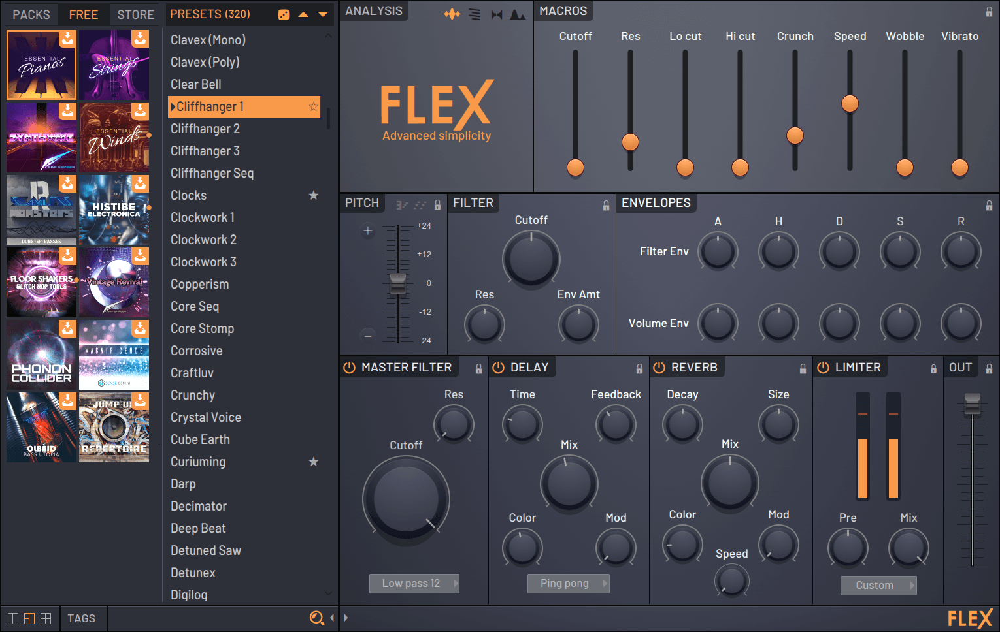

VST's, or Virtual Studio Tools, are self-contained programs that 'plug-in' to FL Studio giving you access to a, virtually unlimited source of new instruments and effects. NOTE: VST format plugins for Windows and macOS are not compatible. Use the correct Windows or macOS installer for your operating system of choice. Using VST's, you can choose premade sounds and effects, and change the sound even further. Whatever you choose to do between routing to the mixer and adding it to the piano toll, the possibilities are endless!
